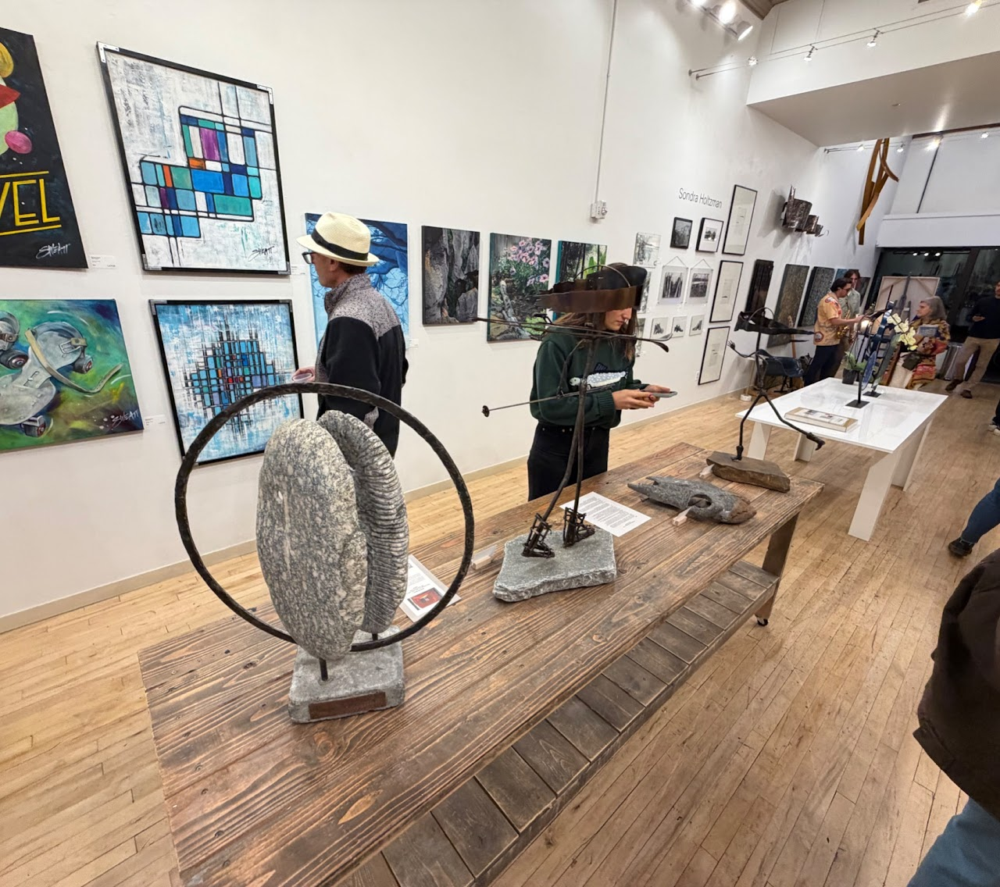
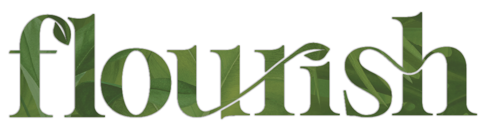
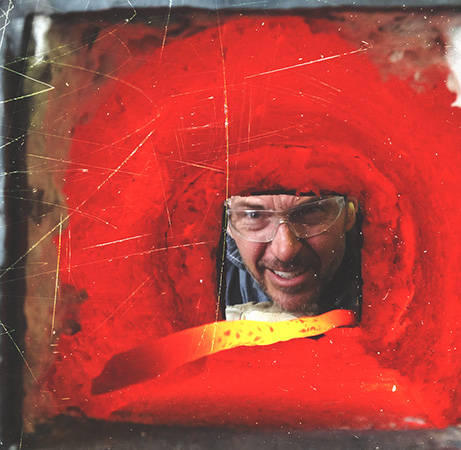
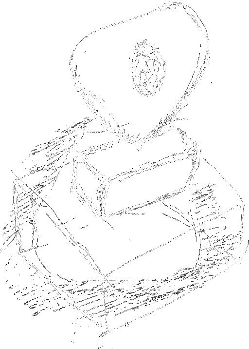

MKachlein Studio is proud to showcase a selection of hand-forged metal sculptures at Layor Art, a contemporary gallery located in the heart of downtown Bend, Oregon.
Located at:
1000 NW Wall St Ste 110
Bend, OR 97703

Floral Shield Series is now on display at Flourish in Tumalo, Oregon. Inspired by the beauty and resilience of the natural world, each piece in this collection blends organic form with sculptural design. Visitors to Flourish can experience these works in person and bring home a one-of-a-kind piece of art, available for purchase directly at the store.

I have spent a lifetime exploring the artistic process and have been actively creating artwork for over 30 years. Specializing in stone and steel sculpture, my work reflects a deep appreciation for transformation—elevating raw materials into striking, evocative forms. My sculptures have been exhibited and sold through galleries, art auctions, fundraisers, and local business venues. I also create work through private commissions.



Since childhood, I’ve been captivated by the challenge of creating three-dimensional forms inspired by my interpretations of the world around me. As a young child, my efforts were pure play, driven by the joy of turning one thing or idea into something else. Later, as I deepened my studies and refined my skills, I realized that my creative process is not just an act of making—it’s a conversation between me, the materials, and the world around me.
Through this ongoing dialogue, I reinterpret what I observe and feel, offering it back to the world with new hidden layers of meaning, mystery, or humor.

Today, as a Central Oregon artist specializing in steel and stone sculpture, I draw inspiration from the rugged beauty of the local landscape, the human form, and objects that hold symbolic significance to me. These subjects often ignite my curiosity and spark my creative process. I view my work as an act of elevation—transforming the mundane, the rough, and the simple into something extraordinary, imbued with a sense of mystery and reverence.